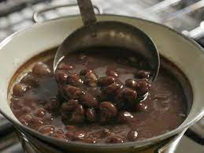

Feijão

Feijão Preto Cozido
Essa receita maravilhosa tem como sua base, azeite, feijão preto, alho e cebola.
Ingredientes
- Azeite
- Cebola
- Alho
- Feijão Preto
Passo-a-Passo
- Colocar o azeite a gosto numa panela em fogo baixo
- Triturar o alho e a cebola e adicionar a panela
- Cozinhar tudo em fogo baixo, até que esteja tudo frito e crocante
- Por fim adicionar o feijão preto, cobrir com água e cozinhar até ficar ao gosto de maciez
- Pode ser consumido quente ou frio, colocar sal a gosto